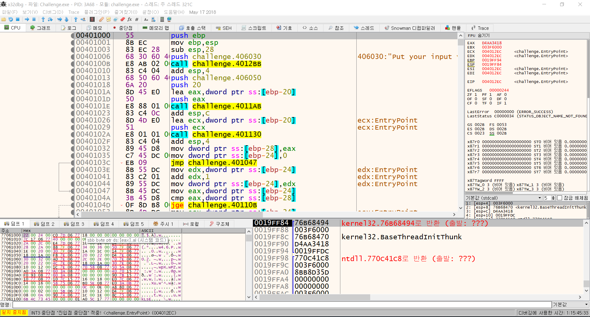

Introducing Myself.
박재우(Jae Woo Park)
INFO-> Korea Univ. Cyber Security. REVERSER.
TMI 자기소개!
- 1998.07.16. 21살
- Korea Univ Sejong Campus. Major Cyber Security.
- Basketball Lover.
짧은 경력

- 해킹동아리 Kuality 운영진.
- KCTF 4th place.
- 국방사이버안보컨퍼런스 대학생 패널토의. 국군 사이버안보사령관상 표창장 수상.
- TSG, RITSEC CTF 등 다수 CTF 참가.. 수상은 없음.ㅜㅜㅜ
IDEA Room
Instagram